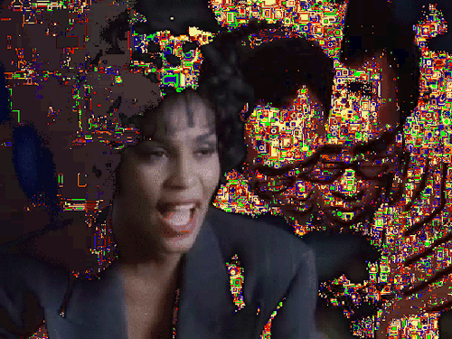

There’s a lot of hard-to-find music in this chapter, so I’ve gathered some of my favorite Berber Auto-Tune songs here.
Hafida
Let’s start with the exempary Hafida! This was the style that first caught my ear back in the early 2000s when I was living in Barcelona. Hafida’s sound is fairly of this style of Amazigh wedding music. All-female backing bands like hers are a rarity in Morocco.
Some of Jamila Tamntaght's videos
Adil El Miloudi
Next up is Adil El Miloudi. These days he's more of a straightforward Moroccan pop star. That said, he has released several albums in the style of this first clip, where Auto-Tuned vocals sit atop all-acoustic arrangements of utar (a Berber string instrument) and percussion.
“ ‘Auto-Tune gives you a better me,’ said Adil without missing a beat.” (p.38)
After the Adil utar song comes "Inas Inas," the final single from utar master Mohammed Rouicha, who passed away in 2012. As the premier utarist/vocalist, Rouicha never used vocal processing, although there’s light Auto-Tuning on the female chorus in this song.
Before and After Auto-Tune
Time for some comparison listens: here’s the same song, performed in the 1980s by Fatima Tihihit with acoustic instrumentation, and versioned by SaadiaTihihit in 2012.
Songs like this next one by Wary were what led me to interview him int he first place. His production is audibly expat insofar as Wary makes a pastiche of various regional sounds: the melody line in "Sallama" comes from an old song by Berber group Archach, to which he adds a reggada kick drum pattern, and so on. Following that's a reggada track from the Nojoum Wislane compilation. Note how the male and female voices are Auto-Tuned differently -- the female soprano gets a more extreme treatment. The timbre of her voice nearly matches that of the violin.
wary
Auto-Tuned Reggada
Amazigh musicians Hassan Wargui, Abdellah Kabbani, and their circle of friends make a brief appearance in this chapter. Hassan reappears in Chapter 7: Tools; head there for more media and notes on his work. While in Casablanca I helped Hassan (aka Imanaren) get his album of great, original songwriting up on Bandcamp. His the complex fate of a proudly independent musician in a country with little to no independent music industry. This video begins in Casablanca. Around 2 minutes in you see the sidewalk vendors on Avenue Mohammed VI. Then the scene cuts to the Issafen village in south Morocco.
Hassan Wargui
I Will Always Love You

Dolly Parton's 1974 debut TV performance of “I Will Always Love You” is an incredibly complex thing. She wrote the song for her former partner Porter Wagoner, who had recently sued her for 3 million dollars, and first performed it in one of her last appearances on his show. Is this shade? Look at the tension captured in her hands! This is not a love song. I’m pairing it with Taiwanese singing show contestant Lin Yu Chun’s meticulous re-performance of Whitney Houston’s version of Parton’s song, which Elvis wanted to buy but couldn't because Dolly Parton knew.
Keep Going!
Those looking for an (Auto-Tune free) introduction to Maghrebi music can start with the compilation album Couscous Beat: The Authentic Flavour of North Africa. Track selection and liner notes make it stand above similar compilations.
Perhaps the greatest single piece of media about 70s/80s Moroccan music is Ahmed El Maânouni's lyrical documentary Transes (1981), about Nass El Ghiwane. Both band and director are from Casablanca. I discuss a Nass El Ghiwane song in detail in Chapter 9: How To Hold On.
I am a devoted fan of Atlantic Radio -- their programming switches, abruptly, between Francophile pop and classic 70s/80s Moroccan songs. The latter air during East Coast US early evenings (and very late nights in Morocco).
Frieze Magazine published by first article on Auto-Tune: “Pitch Perfect.”
On page 52 I quote Katherine E. Hoffman's article “Berber language ideologies, maintenance, and contraction: Gendered variation in the indigenous margins of Morocco,” [pdf popup: yes]. Her discussion of the female voice in Berber culture was helpful in thinking through these issues.
Kristina Nelson's The Art of Reciting the Qur'an is a comprehensive book on the topic that includes fascinating looks into its musical influence.
While this chapter spends time with popular Moroccan music, two recent books are excellent resources on literary Morocco. The first is Souffles-Anfas: A Critical Anthology from the Moroccan Journal of Culture and Politics. "Founded in 1966 by Abdellatif Laâbi and a small group of avant-garde Moroccan poets and artists and banned in 1972, Souffles-Anfas was one of the most influential literary, cultural, and political reviews to emerge in postcolonial North Africa. An early forum for tricontinental postcolonial thought and writing, the journal published texts ranging from experimental poems, literary manifestos, and abstract art to political tracts, open letters, and interviews by contributors from the Maghreb, the Middle East, Africa, Europe, and the Americas."
Poems for the Millennium, Volume Four: The University of California Book of North African Literature is an 800-page marvel containing a wealth of North African verse, from medieval treatises to Berber folklore to contemporary song lyrics.